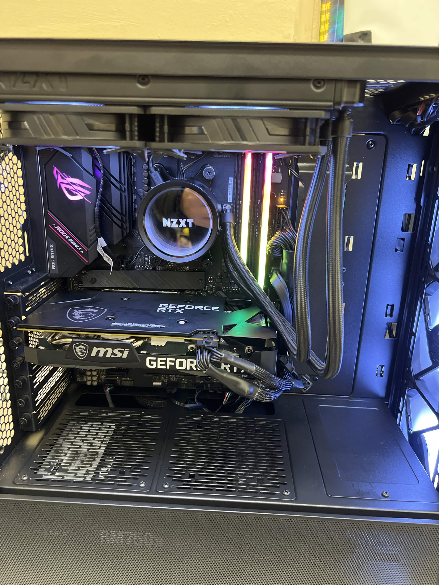
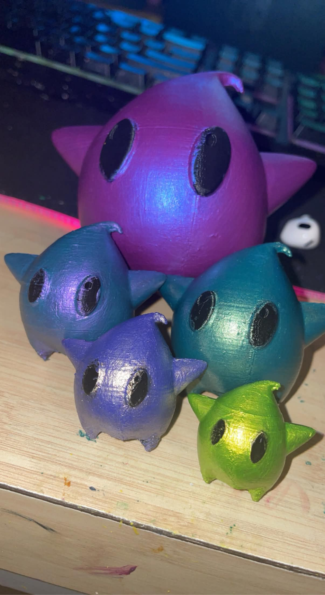
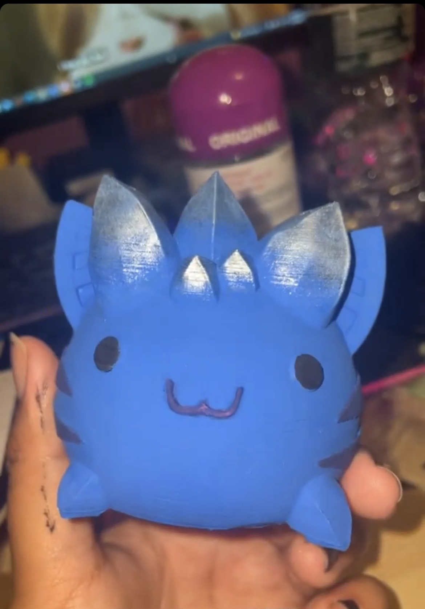
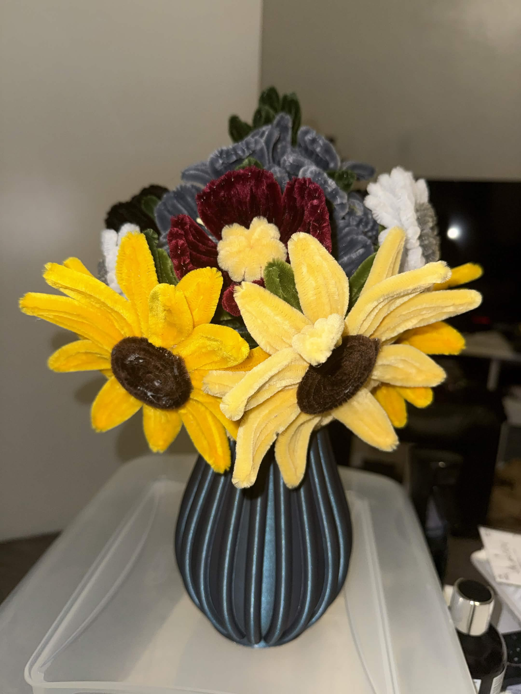

Technology
I enjoy exploring various types of cloud computing products and security practices. As well as seeking out projects that require experimenting, research, and remediation. I also like to keep up to date with technology trends.
My 2nd PC I Built in 2023

Creative Hobbies
Outside of technology, I enjoy various activities such as:
Painting and drawing
3D Print Projects
Super Mario Galaxy Lumas

Slime Rancher Rock Tabby Largo

Arts and crafts

Gaming
I enjoy playing video games from time to time, Mostly Nintendo and PC games.
- Pokemon
- Animal Crossing
- Super Mario
- Kirby
- Minecraft
- Slime Rancher
- Danganronpa
Reading
I often try to read as much as I can whenever I have those moments to sit and relax I am into various genres of books but I will always seek out literature that gives insight or perspective. Something eye opening and thought provoking. As listed below:
- Psychological Fiction
- Science Fiction
- Coming of Age
- Philosophy
- Psychological Fiction
- Classics